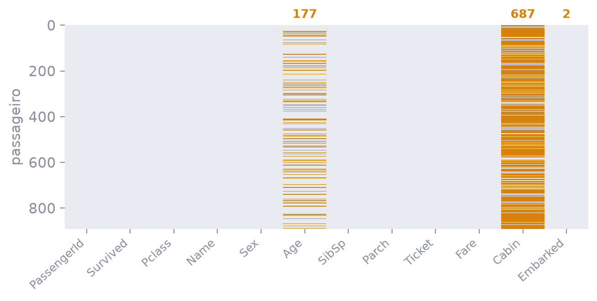
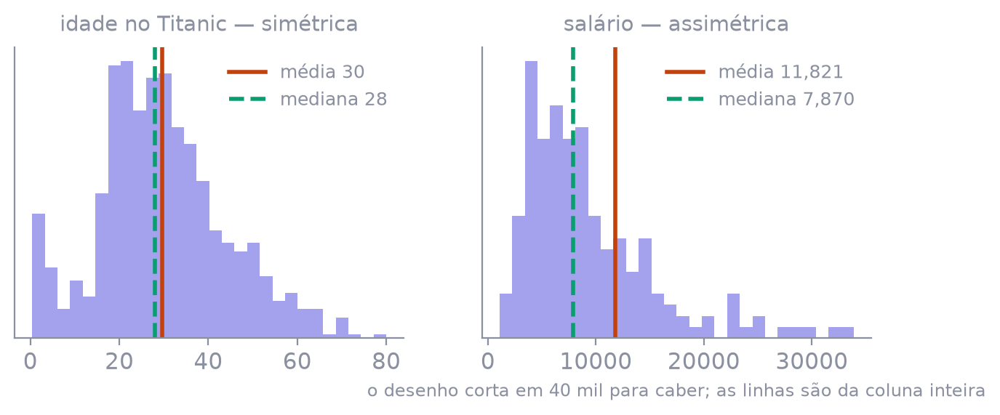
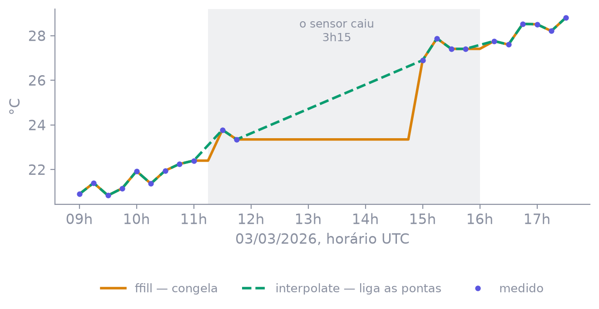
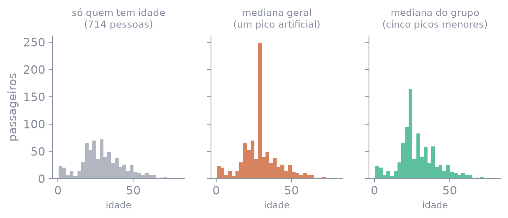
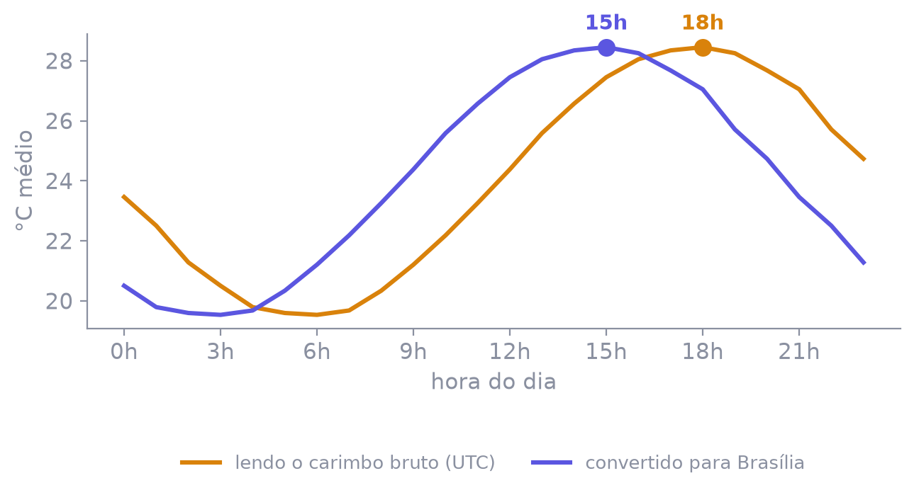
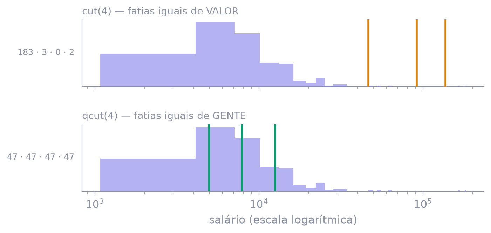
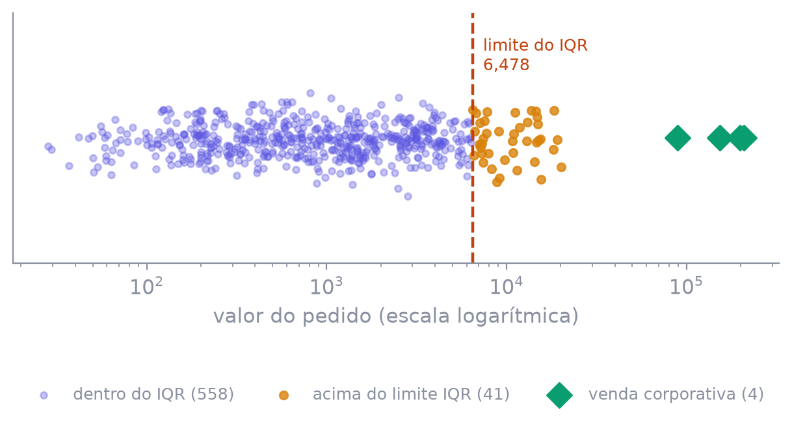

O trabalho que ninguém mostra — e sem o qual
nenhum número está certo
É transformar o que chegou no que pode ser calculado — e registrar cada decisão tomada no caminho.
A proporção varia; a ordem de grandeza, não.
| arquivo | o que é | por que está aqui |
|---|---|---|
vendas-sujas | 627 pedidos | 18 defeitos plantados |
sensores | 3 sensores, 15 em 15 min | tempo, fuso e buraco |
rh | 222 pessoas | imputar por grupo; o outlier legítimo |
titanic | 891 passageiros (real) | 177 idades e 687 cabines vazias |
taxis | 6.433 corridas (real) | o defeito em escala |
gerar-dados.py. Os dois últimos são reais, das aulas 2 e 3.
o vazio e seus disfarces
isna · fillnaa repetida e a quase repetida
drop_duplicatesnúmero que veio como texto
to_numerictrês formatos, um fuso oculto
to_datetimeacento, caixa, espaço
.str · normalizeo absurdo e o raro
IQR · z-scoreDescrever é a primeira etapa da limpeza — e a única que não se pode pular
>>> bruto = pd.read_csv("dados/vendas-sujas.csv")
>>> bruto.dtypes
id_pedido int64
data_pedido str
qtd str
valor str
frete str
avaliacao float64
entrega_dias int64dtypes diz que há um problema — não diz qual, nem onde.
E ele não acusa nada em avaliacao: um float64 parece perfeitamente saudável.
>>> bruto["valor"].unique()[:5]
['R$ 659,70', 'R$ 526,52', '3926.19', '332.34', '1286,40']
>>> bruto["data_pedido"].unique()[:4]
['16-07-2026', '02/04/2026', '18-06-2026', '2026-05-07']
>>> bruto["qtd"].unique()[:5]
['2', '3', '1', '-', '5']culpados = bruto["qtd"][pd.to_numeric(bruto["qtd"], errors="coerce").isna()]
culpados.value_counts()qtd — 16 de 627- 6
1 pç 4
3 un 2
duas 2
...valor — 495 de 627R$ 370,28 3
R$ 1.357,48 2
15584,56 2
...qtd, dezesseis valores tortos: são a exceção, conserte-os. Em valor, quase toda a coluna: o formato é que é outro.
>>> bruto.describe()
id_pedido desconto_pct avaliacao entrega_dias
count 627.00 558.00 588.00 627.00
mean 100299.35 10.39 -120.88 11.81
min 100001.00 0.00 -999.00 1.00
50% 100301.00 10.00 4.00 10.00
max 100600.00 25.00 5.00 365.00Leia sempre min e max antes de olhar a média. É o hábito que separa quem acha o defeito de quem o publica.
def raio_x(df):
return pd.DataFrame({
"tipo": df.dtypes.astype(str),
"faltam": df.isna().sum(),
"faltam_%": (df.isna().mean() * 100).round(1),
"distintos": df.nunique(),
"memória_KB": df.memory_usage(deep=True)[1:] / 1024,
})df.shape e df.duplicated().sum(). São seis linhas de código antes de qualquer decisão — e elas mudam todas as decisões seguintes.
>>> bruto["uf"].nunique()
27
>>> bruto["uf"].value_counts().head(8)
pr 42
RS 36 # repare: RS aparece
RS 31 # duas vezes — um deles é "RS "
pe 30
rs 29
São Paulo 26
BA 25SP, sp, " SP", S.P. e São Paulo são cinco coisas diferentes para o computador. Guarde o 27: no fim da aula ele vira 10.
O vazio, os seus disfarces, e a decisão de negócio por trás de cada preenchimento
| aparece como | em que coluna | é o quê |
|---|---|---|
NaN | número | Not a Number |
None | texto | ausência de valor |
NaT | data | Not a Time |
<NA> | tipo anulável | o vazio oficial |
isna() enxerga todos os quatro. É por ele que se começa.
>>> np.nan == np.nan
False
>>> df[df["valor"] == np.nan] # sempre vazio, nunca dá erro
Empty DataFrame
>>> df[df["valor"].isna()] # o jeito certo
[3 rows x 18 columns]>>> bruto["frete"].dtype
str # devia ser float64
>>> bruto["frete"].isna().sum()
37
>>> bruto["frete"].isin(["-", "n/d", " "]).sum()
17 # dezessete faltantes escondidos atrás de um traço"", -, N/A, n/d, null, sem data. Dezessete traços bastam para derrubar a coluna inteira para texto.
"", "NA", "N/A", "n/a",
"NULL", "null", "NaN", "nan",
"None", "<NA>", "#N/A", ...NULOS = ["-", "n/d", "sem data",
"?", "00/00/0000", " "]
pd.read_csv(arq, na_values=NULOS)sem na_values · 624 faltantes reconhecidos
com na_values · 677 faltantes reconhecidos>>> df["avaliacao"].value_counts().sort_index()
-999.0 73 # o "não respondeu" do sistema antigo
1.0 68
5.0 188
>>> df["avaliacao"].mean()
-120.88 # numa escala de 1 a 5
>>> df["avaliacao"].replace(-999, np.nan).mean()
3.590? A média cairia de 3,59 para 3,1 e nada pareceria errado. Por isso o min do describe() não é opcional.
Sentinelas famosas: -999, -1, 0, 9999, 1900-01-01, 1970-01-01. O describe do slide 10 já tinha entregado esta.
plt.imshow(titanic.isna()) # âmbar = faltando
Age salpicada, Cabin quase toda vazia, Embarked com duas linhas. Cada padrão pede uma decisão diferente.
>>> titanic.shape
(891, 12)
>>> titanic.dropna().shape # sem argumento nenhum
(183, 12) # 79% da tabela foi embora
>>> titanic.dropna(subset=["Embarked"]).shape # só quem importa
(889, 12)
>>> titanic.dropna(thresh=11).shape # exige 11 colunas cheias
(733, 12)Quase sempre o certo é subset=: derrube a linha só quando falta o que você vai usar.
titanic.fillna(0)Cabine vira zero. Idade vira recém-nascido. Porto de embarque vira zero.
titanic.fillna({
"Age": titanic["Age"].median(),
"Embarked": "S",
"Cabin": "sem registro",
})Uma decisão declarada por coluna.

skew 0,39 — tanto faz. No salário, skew 7,16: a média é 11.821 e a mediana 7.870. A regra: com |skew| > 1, use a mediana.
Imputar pela média inventa 34 pessoas ganhando 12 mil — e a média sobe de novo.
| comando | o que ele afirma | quando serve |
|---|---|---|
ffill() | "nada mudou desde a última medida" | sensor, cotação |
bfill() | "vale o que veio depois" | cuidado: usa o futuro |
interpolate() | "variou continuamente entre as pontas" | temperatura, nível |
fillna(média) | "vale o típico de sempre" | ignora a hora |

ffill congela a estufa por três horas; o interpolate liga as pontas — o que a física manda.
ffill(limit=2) é o freio de mão: repete duas vezes, e o resto continua buraco.
>>> a.index.to_series().diff().value_counts()
0 days 00:15:00 348
0 days 00:30:00 11
0 days 03:15:00 1 # o sensor ficou mudo
>>> a["temperatura"].isna().sum()
23 # nenhum deles é a queda de 3h
>>> a["temperatura"].asfreq("15min").isna().sum()
49 # agora sim: a grade regular revela o silêncioNaN — não existe linha. O asfreq materializa a grade e transforma o silêncio em buraco visível.
titanic.groupby(["Pclass", "Sex"])["Age"].transform("median")| classe | mulher | homem |
|---|---|---|
| 1ª | 35,0 | 40,0 |
| 2ª | 28,0 | 30,0 |
| 3ª | 21,5 | 25,0 |
| todos | |
|---|---|
| — | 28,0 para todo mundo |
18,5 anos de diferença, apagados por um número só.
transform devolve uma coluna do tamanho da original, com a mediana do grupo de cada linha.

Não é errado. É uma consequência, e precisa ir para o relatório.
>>> titanic["idade_faltava"] = titanic["Age"].isna()
>>> titanic.groupby("idade_faltava")[["Survived", "Pclass"]].mean()
Survived Pclass
idade_faltava
False 0.406 2.24
True 0.294 2.60Em estatística: dado MNAR. Pergunte por que falta antes de perguntar com o quê preencher.
| situação | decisão |
|---|---|
| falta em < 5% | dropna(subset=[...]) |
| 5–40%, número simétrico | fillna(média) |
| 5–40%, número assimétrico | fillna(mediana) |
| 5–40% e há grupo natural | groupby().transform("median") |
| série temporal ordenada | ffill(limit=n) ou interpolate |
| falta em > 50% | descarte, ou vire flag |
| falta porque não se aplica | preencha com "não se aplica" |
data_cancelamento vazia num pedido entregue é a resposta certa.
A linha repetida, a quase repetida — e a que só parece repetida
>>> df.duplicated().sum() # keep="first": marca da 2ª em diante
18
>>> df.duplicated(keep=False).sum() # marca TODAS as cópias
36
>>> df.drop_duplicates().shape
(609, 18)keep=False é para olhar — mostra as duas cópias lado a lado. keep="first" é para remover.
>>> sem_dup.shape
(609, 18)
>>> sem_dup["id_pedido"].nunique()
600 # 609 linhas para 600 pedidos: sobram 9| id | cliente | cidade |
|---|---|---|
| 100002 | GABRIELA NUNES | SÃO PAULO |
| 100002 | gabriela nunes | São Paulo |
diferentes ✗
para o negócio:
o mesmo pedido, lançado duas vezes ✓id_pedido repete, algo está errado.
def chave(s):
"""Texto reduzido ao essencial: sem acento, sem espaço extra, minúsculo."""
return (s.astype("str")
.str.normalize("NFKD").str.encode("ascii", "ignore").str.decode("ascii")
.str.replace(r"\s+", " ", regex=True)
.str.strip().str.lower())
limpo = (sem_dup.assign(_k=chave(sem_dup["cliente"]))
.drop_duplicates(subset=["id_pedido", "_k", "produto"]))>>> taxis.duplicated(["distance", "fare", "tip", "payment"]).sum()
935
>>> taxis.duplicated().sum() # a linha inteira
0
>>> taxis[taxis.duplicated(["fare", "distance"], keep=False)].head(3)
pickup distance fare payment
3377 2019-03-27 15:18:33 0.00 2.50 cash
120 2019-03-21 17:21:44 0.00 2.50 cash
4663 2019-03-27 13:57:06 0.00 2.50 cashdrop_duplicates nessas colunas joga fora 15% do dataset achando que está limpando.
Enquanto a coluna for texto, ela não soma, não ordena e não vira gráfico
| tipo | para que serve | o vazio dele |
|---|---|---|
int64 · float64 | número | só o float tem NaN |
Int64 · Float64 | número anulável | <NA> |
str | texto | NaN |
datetime64 | instante | NaT |
timedelta64 | duração | NaT |
category | texto que se repete | NaN |
int64 minúsculo não representa ausência. Um buraco e a coluna vira float64 sozinha — o seu id aparece como 100449.0.
astype — rígidodf["qtd"].astype("int")ValueError: cannot convert
float NaN to integerPara quando você quer a garantia.
to_numeric — tolerantepd.to_numeric(df["qtd"],
errors="coerce")o que não converte vira NaNPara quando você quer descobrir.
virou_nan = novo.isna() & velho.notna() — aqui, 6 valores: "3 un", "1 pç", "duas".
(s.str.replace("R$", "")
.str.replace(".", "") # milhar
.str.replace(",", ".")) # decimal| entrou | saiu |
|---|---|
| R$ 1.234,56 | 1234.56 ✓ |
| 977,76 | 977.76 ✓ |
| 1004.84 | 100484.00 ✗ |
tem_virgula = t.str.contains(",")
t = t.mask(tem_virgula, t.str.replace(".", "").str.replace(",", "."))Para colunas de poucos valores distintos: UF, categoria, canal, status. Não para nome nem CPF.
>>> rh["cargo"] = pd.Categorical(rh["cargo"], NIVEIS, ordered=True)
>>> (rh["cargo"] > "Especialista").sum()
92
>>> rh.groupby("cargo")["salario"].median()
Analista 4.370
Analista Sênior 4.902
Especialista 8.289
Coordenador 9.658
Gerente 14.249
Diretor 182.400groupby devolveria alfabético — Analista, Coordenador, Diretor, Especialista — e a tabela deixaria de contar a história da carreira.
Três atos sobre a mesma coluna — e o defeito que não falha
>>> limpo["data_pedido"].sample(6)
2026-07-16 # ISO — ano, mês, dia
02/04/2026 # brasileiro — dia, mês, ano
18-06-2026 # brasileiro, com traço
2026-06-06
30/02/2026 # esta data não existe
sem data>>> pd.to_datetime(limpo["data_pedido"], errors="coerce").isna().sum()
UserWarning: Parsing dates in %d-%m-%Y format when
dayfirst=False (the default) was specified.
534 # de 600>>> misto = pd.to_datetime(coluna, format="mixed",
... dayfirst=True, errors="coerce")
>>> misto.isna().sum()
12 # só as datas impossíveis. resolvido?
>>> misto.min().date(), misto.max().date()
(2026-01-02, 2026-12-07)| texto | o que é |
|---|---|
| 2026-06-09 | 9 de junho |
| 2026-01-11 | 11 de janeiro |
| 2026-07-08 | 8 de julho |
mixed entendeu| virou | ou seja |
|---|---|
| 2026-09-06 | 6 de setembro |
| 2026-11-01 | 1º de novembro |
| 2026-08-07 | 7 de agosto |
dayfirst=True valeu também para as datas em ISO. Sem erro, sem aviso, sem NaT — só o faturamento de junho aparecendo em setembro.
def para_data(s, formatos=("%Y-%m-%d", "%d/%m/%Y", "%d-%m-%Y")):
"""Tenta cada formato explícito, na ordem; só mexe no que ainda está vazio."""
saida = pd.Series(pd.NaT, index=s.index, dtype="datetime64[us]")
for f in formatos:
pendente = saida.isna() & s.notna()
saida[pendente] = pd.to_datetime(s[pendente], format=f, errors="coerce")
return saidaformat= explícitomin e max contra o negócio>>> d = limpo["data_pedido"]
>>> d.dt.year, d.dt.month, d.dt.day, d.dt.quarter
>>> d.dt.day_name(), d.dt.dayofweek, d.dt.is_month_end
>>> d.dt.isocalendar().week, d.dt.days_in_month
>>> limpo.groupby(d.dt.day_name())["valor"].sum().nlargest(3)
Friday 395.080,59
Wednesday 374.809,21
Monday 270.578,64
tz_convert"está em outro fuso — traduza". Move o relógio.
tz_localize"sempre foi daqui — só rotule". Não move nada.
Acento, caixa e espaço invisível — três formas de o mesmo nome não ser o mesmo
>>> s = pd.Series([" Ana Paula Souza ", "BRUNO CARVALHO"])
>>> s.str.strip() # tira o espaço das pontas
>>> s.str.lower() # minúsculo
>>> s.str.title() # Inicial Maiúscula
>>> s.str.len() # o tamanho de cada um
>>> s.str.contains("Ana")
>>> s.str.replace(r"\s+", " ", regex=True)NaN sozinho. Sem laço, sem for.
Cuidado com title(): ele devolve "Rio De Janeiro". Preposição precisa de conserto depois.
"··São··Paulo·"
"Rio\tde·Janeiro"
"Porto···Alegre"strip() só"São··Paulo" ✗
"Rio\tde·Janeiro" ✗
"Porto···Alegre" ✗s.str.replace(r"\s+", " ", regex=True).str.strip() # → "São Paulo" ✓strip() só limpa as pontas. O espaço duplo do meio, a tabulação e a quebra de linha exigem a expressão regular \s+.
>>> a = "São Paulo" # o ã como UM caractere
>>> b = unicodedata.normalize("NFD", a) # o ã como a + til
>>> a == b
False
>>> len(a), len(b)
(9, 10) # visualmente idênticos, um byte de diferençadef chave(s):
return (s.astype("str")
.str.normalize("NFKD") # separa letra e acento
.str.encode("ascii", "ignore") # joga o acento fora
.str.decode("ascii")
.str.replace(r"\s+", " ", regex=True) # um espaço só
.str.strip().str.lower())"São Paulo"
"SAO PAULO"
" São Paulo "
"Sao Paulo""sao paulo"
"sao paulo"
"sao paulo"
"sao paulo"MAPA_UF = {"sao paulo": "SP", "s.p.": "SP", "rio de janeiro": "RJ",
"rio grande do sul": "RS", "minas gerais": "MG"}
limpo["uf"] = chave(limpo["uf"]).replace(MAPA_UF).str.upper()>>> limpo["uf"].nunique()
10
>>> limpo["uf"].value_counts()
RS 111 · SP 93 · PR 66 · PE 51 · CE 50
MG 49 · RJ 48 · BA 48 · SC 44 · GO 40S.P. é São Paulo.
.map(dicionário)O que falta vira NaN.
rh["depto"].map(MAPA).isna().sum()
# 0 → nenhuma grafia esquecida.replace(dicionário)O que falta fica como estava.
# "T.I" (sem o ponto final)
# passaria batido para sempreNaN depois do map é o teste de que o dicionário está completo.
No RH: 22 grafias para 5 departamentos.
"cupom PROMO-VERAO-6697"
"entregar na portaria"
"trocar por PROMO-TROCA-2800
se faltar estoque"| campanha | codigo |
|---|---|
| VERAO | 6697 |
| NaN | NaN |
| TROCA | 2800 |
df["obs"].str.extract(r"PROMO-(?P<campanha>[A-Z]+)-(?P<codigo>\d{4})")NaN.
>>> cpf = limpo["cpf"].str.replace(r"\D", "", regex=True)
>>> cpf.str.len().value_counts()
11 589
10 11 # passaram por uma planilha
>>> cpf.str.zfill(11).str.len().value_counts()
11 600A prevenção: read_csv(..., dtype={"cpf": "str"}). O conserto: zfill.
Limpar é tirar o que está errado. Transformar é criar o que ainda não existe
pedidos = limpo.assign(
subtotal = lambda d: d["valor"],
desconto = lambda d: d["valor"] * d["desconto_pct"] / 100,
liquido = lambda d: d["subtotal"] - d["desconto"] + d["frete"],
ticket = lambda d: d["liquido"] / d["qtd"],
)lambda d:, o d é a tabela como está naquele passo — por isso liquido pode usar o desconto que nasceu na linha de cima.
Sem ele seriam quatro atribuições soltas, e a ordem entre elas ficaria implícita.
df["porte"] = np.where(df["liquido"] > 1000, "grande", "pequeno")
condicoes = [df["liquido"] >= 50_000, df["liquido"] >= 5_000,
df["liquido"] >= 500, df["liquido"] >= 0]
df["faixa"] = np.select(condicoes,
["corporativo", "alto", "médio", "baixo"],
default="a conferir")médio 320 · baixo 211 · alto 60 · a conferir 5 · corporativo 4default é a parte importante. Um default="baixo" enterraria os cinco valores negativos numa categoria plausível; "a conferir" os entrega para você.
df.apply(..., axis=1)linha a linha, em Python195,8 msdf["col"].apply(...)valor a valor, na coluna8,1 msdf["col"] * 1.1a coluna inteira, em C0,05 msapply na coluna → apply(axis=1), só em último caso.

cut corta em valores — e o salário do diretor definiu sozinho os cortes: 183 · 3 · 0 · 2. qcut corta em quantis: 47 · 47 · 47 · 47.
Faixa etária pede cut; faixa salarial, qcut.
relatorio = (pedidos
.pipe(sem_cancelados)
.pipe(com_mes)
.pipe(so_colunas, ["mes", "regiao", "liquido"])
.groupby(["mes", "regiao"])["liquido"].sum()
.unstack())pipe é um passo com nome. Quando perguntarem "por que março mudou?", a resposta está na lista — não numa célula perdida.
O valor absurdo, o valor raro e o valor impossível — três coisas diferentes
>>> v.quantile([.25, .50, .75, .95, .99, 1])
0.25 308,62
0.50 900,98 # metade das vendas abaixo de 900
0.75 2.505,76
0.95 7.369,91
0.99 18.166,06
1.00 157.051,98 # quase 9× o percentil 99q1, q3 = s.quantile(.25), s.quantile(.75)
iqr = q3 - q1
baixo, alto = q1 - 1.5 * iqr, q3 + 1.5 * iqrO 1,5 é convenção, não lei.
(s - s.mean()) / s.std()Usa média e desvio — o que o outlier estraga.
4 pedidos com |z| > 3
0.6745 * (s - s.median()) /
(s - s.median()).abs().median()Usa mediana — que não se move.
83 pedidos com |z| > 3

| tipo | como se reconhece | o que fazer |
|---|---|---|
| Erro de digitação | qtd = 999 de um item de R$ 40 | corrigir, ou virar NaN e imputar |
| Raro e legítimo | a venda corporativa, com contrato na observação | manter, e analisar à parte |
| Impossível | valor negativo, idade 200, frete −1 | investigar: é bug de sistema |
| regra | pedidos | média | total |
|---|---|---|---|
| tudo como está | 600 | 2.784 | 1.662.243 |
| removendo pelo IQR | 549 | 1.288 | 703.001 |
| aparando no limite | 600 | 1.673 | 998.876 |
| só os positivos | 595 | 2.794 | 1.662.426 |
O clip não apaga a linha: encosta o valor no limite. É a winsorização.
>>> df.loc["b"] # pelo RÓTULO do índice
>>> df.iloc[1] # pela POSIÇÃO
>>> df.loc["b":"d"] # ['b', 'c', 'd'] — INCLUI o fim
>>> df.iloc[1:3] # ['b', 'c'] — EXCLUI o fimloc inclui o último; a do iloc exclui. É o bug clássico de um item a mais ou a menos.
>>> caros = df[df["liquido"] > 1000]
>>> caros["liquido"] = 0 # sem erro, sem aviso
>>> df["liquido"].max()
157051.98 # o original está intactoSettingWithCopyWarning, e o resultado era imprevisível. No pandas 3 o Copy-on-Write é o padrão: o aviso sumiu porque a regra ficou firme.
df.loc[condição, "col"] = valornovo = df[condição].copy()Do arquivo bruto à tabela pronta, numa função que se pode rodar de novo
etapa linhas faltantes
1. leitura com na_values 627 677
2. sem linhas idênticas 609 657
3. sem quase-duplicatas 600 644
4. tipos convertidos 600 723 # subiu!
5. texto padronizado 600 723
6. faltantes tratados 600 590
7. derivadas e categorias 600 1129 # subiu de novo
8. 7 valores impossíveis anulados 600 1143testes = {
"uma linha por pedido": d["id_pedido"].is_unique,
"data é data": pd.api.types.is_datetime64_any_dtype(d["data_pedido"]),
"UF com 2 letras": d["uf"].str.fullmatch(r"[A-Z]{2}").all(),
"CPF com 11 dígitos": d["cpf"].str.len().eq(11).all(),
"sem valor negativo": (d["valor"].dropna() >= 0).all(),
"avaliação entre 1 e 5": d["avaliacao"].dropna().between(1, 5).all(),
"datas dentro do período": d["data_pedido"].dropna().between(ABRIU, HOJE).all(),
}>>> vendas.to_csv("vendas-limpas.csv", index=False)
>>> pd.read_csv("vendas-limpas.csv").dtypes
data_pedido str # virou texto de novo
categoria str # a category se perdeuto_parquet: preserva tipos, ocupa menos, lê mais rápido.
info · describe · isna().sum() · duplicated().sum()"", "-", -999 — e a linha que nem existe_faltavadrop_duplicateserrors="coerce", e o relatório do que virou NaNmin e max contra o negócioapply(axis=1) é o último recursoÉ conhecer o assunto. A sintaxe desta aula é só o meio de escrever o que você já decidiu.
Nenhum comando sabe se 999 é erro de digitação ou o maior pedido do ano.
Nenhuma fórmula sabe se a idade em branco é privacidade ou desleixo.
Quem sabe é você — e escreve a decisão onde o próximo possa ler.
Aula 6 — Agregação e o primeiro gráfico: groupby, merge, pivot_table, Matplotlib.
Vai abrir a janela de impressão do navegador. Confira estas três opções:
Cada slide vira uma página no formato 4:3. O PDF sai sempre no tema claro, para não gastar tinta se você imprimir em papel.